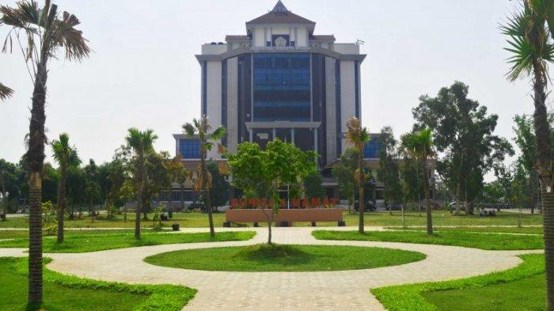
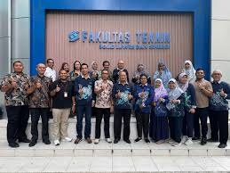

Di Universitas ini saya banyak belajar mengenai teknologi dan disini juga saya merasakan hal yang berbeda saat masih duduk dibangku SMA. saya juga belajar bagaimana cara menjalin hubungan yang erat dengan sesama mahasiswa lainnya
Di Fakultas ini saya menjelajah lebih dalam lagi yaitu fakultas teknik, yang menjadikan saya yang tau lebih lanjut dengan dunia IT. disini saya juga bisa berdiskusi, mengikuti praktikum yang ada, juga dapat memahami tentang programing seperti web, python, DLL.
